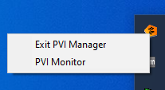
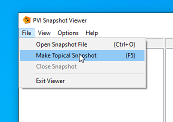

PVI- Snapshot
The name says it all: With PVI Snapshot it is possible to take a snapshot of all objects registered in the PVI Manager for diagnostic purposes.
It is then possible to examine all names, properties and statuses of the objects.
How To Create a PVI Snapshot
Find PVI Manager Icon in Taskbar

Open PVI Monitor
Right click to open PVI- Monitor

In PVI- Monitor main view we can see a summary of all created PVI objects including their current statuses:

There are 6 objects ( PVI root, line, device, cpu, task, variable) and fortunately none of them are in fault condition. We've no valid PVI licence (=Trial) and therefore PVI will stop working in about a quarter of an hour. There is currently just one client using Pvi Manager.
PVI Snapshot Viewer
But if we want to see more we have to open the PVI Snapshot Viewer:

At this point, we can either view a previously created snapshot or create a new one that captures the current status.

Now we are able to browse through the entire hierarchical tree of PVI objects and look at each object in detail: